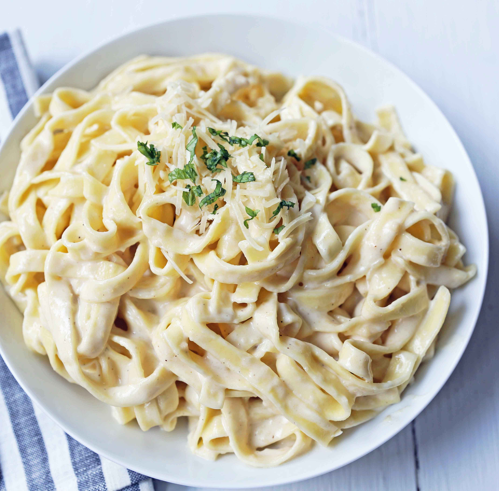

Fettuccine Alfredo is a classic Italian pasta dish renowned for its rich, creamy texture and comforting flavor profile. The traditional version, which originated in Rome, relies on a beautifully simple emulation of just three core ingredients: high-quality fettuccine pasta, unsalted butter, and freshly grated Parmigiano-Reggiano cheese. As the hot, starchy pasta water tosses with the melting butter and finely grated cheese, it creates a velvety, smooth sauce that coats each ribbon of pasta perfectly. This authentic Roman style delivers a delicate yet deeply savory flavor, celebrating the purity and quality of its minimal ingredients.In contrast, the popular American adaptation of Fettuccine Alfredo transforms the dish into a much heavier, more indulgent comfort food. This version typically incorporates heavy cream, garlic, and sometimes cream cheese to build a thick, stable sauce, often garnished with fresh parsley and black pepper. It is also common to see proteins like grilled chicken, shrimp, or broccoli tossed into the pasta to make it a more substantial, standalone meal. Whether enjoyed in its minimalist Italian form or its hearty American style, Fettuccine Alfredo remains a beloved staple of pasta lovers worldwide.